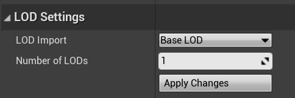
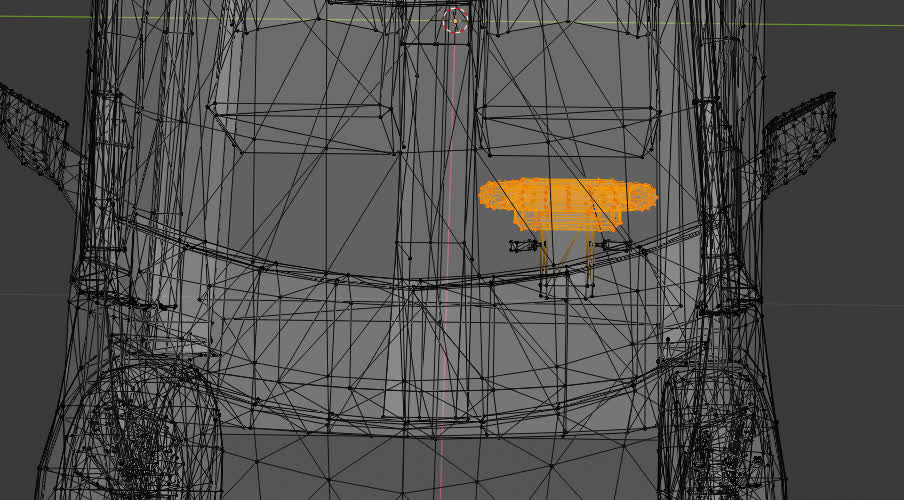
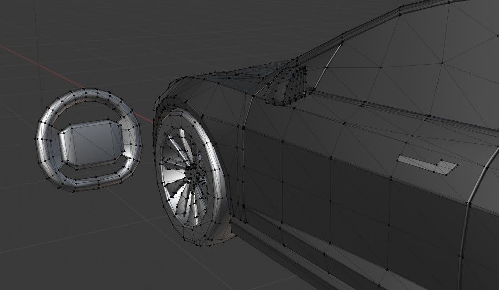

修改车辆模型
您可能有兴趣在 DReyeVR 提供的功能之外，为车辆网格本身添加新功能。在本指南中，我们将帮助您熟悉一些工具和基本要求，以及我们如何修改原始 CARLA Tesla 静态网格以具有动态方向盘的示例。
请注意，为了继续，我们假设您可以访问以下软件：
-
虚幻引擎编辑器
-
Carla （从源代码编译）
-
Blender (免费下载)
入门
如果你已经有了一个想法，首先要看的肯定是 CARLA 自己的 添加定制车辆 优秀指南。但了解实现可行的 CARLA/UE4 车辆的潜在机制仍然是一本好好的读物：
- 骨骼: 骨骼可以被认为是装配实体，允许实体之间的连接是刚性的和受约束的。
- 骨架: 骨架包含骨骼及其层次的位置和方向。
- 物理网格: 表示网格重要特征周围的边界框。主要用于碰撞检测。
- 动画: 动画蓝图通常通过某些状态机逻辑控制骨骼网格的动画。
- 蓝图: 将上述所有内容组合为一个高度动态和灵活的 UObject，可以用作我们的 Vehicle 代理。
考虑到所有这些，您可能会对以下内容感兴趣：
-
蓝图:
$CARLA_ROOT/Unreal/CarlaUE4/Content/Carla/Blueprints/Vehicles/XYZ -
其他:
$CARLA_ROOT/Unreal/CarlaUE4/Content/Carla/Static/Vehicles/4Wheeled/XYZ
示例：添加动力学方向盘
问题
在没有响应式方向盘的情况下驾驶相当不舒服，并且由于 Carla 车辆网格不是为人类驾驶员设计的，因此没有必要将方向盘与整个车辆外壳分离。这是一个问题，因为车轮现在是车辆网格的一部分，并且不能在运行时设置动画。
在我们的例子中，我们选择将 TeslaM3 网格用于基类，因此我们也将在这里使用它。
我们的行动计划将是：
- 从车辆中提取方向盘网格，并创建自己的静态网格
- 更新车辆网格以拆下方向盘
- 将方向盘重新连接为基于代码的动力学对象
对于步骤 1 和 2，我们将使用免费开源 Blender 软件进行 3D 建模工作：
1. 提取方向盘
导出到 FBX
首先，转到要导出的静态网格文件，在我们的示例中，我们希望导出$CARLA_ROOT/Unreal/CarlaUE4/Content/CARLA/static/Vehicles/4Wheeled/Tsla/SM_TeslaM3_v2.uasset（请注意，这些文件应该有粉红色下划线，表示它们是完整的静态网格文件）。
一个 细节层次（Level-Of-Detail, LOD）
建议对此导出使用最高的 LOD 设置，因为此车辆将始终靠近相机，因此具有多个 LOD 是毫无意义的，并且它使导入到 Blender 变得更简单。
为此，只需双击静态网格，然后在左侧的“资产详细信息(Asset Details)”窗格中，在“LOD 设置(LOD Settings)”中将“LOD数量(Number of LODs)”滑块向下拖动到1，然后单击“应用更改(Apply Changes)”，如下所示。
- 
导出到 blender
现在，回到 内容浏览器(Content Browser)中，您可以右键单击文件，然后选择 Asset Actions(资产操作) -> Export(导出)，并为结果要导出的.FBX文件指定一个位置。
在 Blender 中建模
现在，打开一个新的 Blender 窗口并删除默认生成的立方体。然后转到 File(文件) -> Import(导入) -> FBX (.fbx)并选择刚刚创建的文件。
现在，您应该看到一个简单的 Blender 窗口，其中包含车辆，如下所示：
要使用 WASD 控件切换移动，请按 shift + ` 。向车内移动可以找到方向盘的位置。
最简单的方法（我发现）有效地提取方向盘，因此使用线框模式选择所有顶点，即使是那些在实体渲染中不可见的顶点。要进入线框模式，请按z，然后选择wireframe(线框)（应该是最左边的选项）。然后你应该看到这样的内容：
然后，要实际选择正确的顶点，我们需要在视口左上角从 Object Mode(对象模式) 更改为 编辑模式(Edit Mode) 。然后，我们需要以这样的方式定位我们的相机，以尽量减少被选择不需要的顶点，并使用我们想要的任何选择技术（我喜欢套索(lasso)选择）来选择整个方向盘，如下所示：
- 
注意
如果您选择了多余的顶点，则始终可以通过在单个顶点上shift+click来撤消这些顶点。
然后，您应该能够将整束移出车辆（或使用shift+d将它们全部复制并清理原始内容）以获得如下内容：
| 线框(Wireframe) | 已渲染(Rendered) |
|---|---|
|  |
最后，您应该能够通过以相同的方式（在线框中）选择所有顶点并删除它们（当然，然后撤消删除）来导出单个选择（需要同时导出 just-wheel 和 just-vehicle 模型）。然后选择 文件(File) -> 导出(Export) -> FBX(.fbx) 以获得最佳兼容性。对车辆网格体和方向盘都执行此作（我在导出时将方向盘移动到原点，但我不确定这是否必要）。
2. 更新车辆网格
返回编辑器
现在，回到编辑器中，我们将为 Vehicle 网格体和方向盘创建一个新目录。本节的大部分内容是 Carla 提供的文档 的修改版本。
然后，在新的Mesh目录中，我们只需在内容浏览器中右键点击并选择 导入资产(Import Asset)，然后选择我们的 FBX 模型。确保将 导入内容类型(Import Content Type) 设置为 几何体和蒙皮权重(Geometry and Skinning Weights)，将 法线导入方法(Normal Import Method) 设置为 导入法线(Import Normals)，将 材质导入方法(Material Import Method) 设置为 不创建材质(Do not create materials)，最后取消勾选 导入纹理(Import Textures)。
我们现在应该有一个（粉红色下划线的）骨架网格体资源、（米色下划线的）物理资源和（淡蓝色下划线的）骨架资源。然后，右键点击新的（粉红色下划线）骨架网格体资源，然后选择 Create -> Anim Blueprint 以创建新的动画蓝图。
在此动画蓝图中，请确保以下内容：
-
转到
类设置(Class settings) -> 详细信息(Details) -> 类选项(Class Options) -> 父类(Parent Class)，并将类的父级重新设置为VehicleAnimInstance。 -
在
我的蓝图(My Blueprint)部分中，单击AnimGraph，然后从现有的TeslaM3动画中复制相同的图表逻辑，如下所示：
| 重定父对象(Reparent) | 动画 |
|---|---|
 |
 |
现在你已经完成了动画蓝图。
根据我的经验，我必须进行一些额外的调整，才能为我的整体网格使用正确的组件（粉红色下划线），如下所示：
-
Asset Details -> Physics Asset: 使用已存在的$CARLA_ROOT/Unreal/CarlaUE4/Content/Carla/Static/Vehicles/4Wheeled/Tesla/SM_TeslaM3_PhysicsAsset.uasset物理资产（不是_v2_模型！）替换新的 -
Asset Details -> Lighting: 与物理资产相同 -
Preview Scene Settings -> Animation Blueprint: 你刚刚创建的新动画蓝图。
最后，您可以删除新导入的 PhysicsAsset 文件，因为它不再被使用（我选择使用普通的 TeslaM3 文件）
在BP_EgoVehicle_DReyeVR中，您终于可以编辑Mesh (Inherited) -> Details -> Mesh字段，以使用我们刚刚更新的新 SM（粉红色下划线）。由于这会清除 动画(Animation)部分，因此您还需要更新Mesh (Inherited) -> Animation -> Anim Class字段以使用我们刚刚创建的新动画类。
现在，DReyeVR EgoVehicle 应该可以完全驾驶，并且像以前一样运行，但现在驾驶座上没有方向盘了！

3. 重新安装动力学方向盘
导入到 UE4
现在，我们想将方向盘导入回引擎，以便在运行时动态生成、放置和更新它。
最简单的方法是导入 SteeringWheel .fbx，就像使用车辆网格体一样，从那里它应该预先应用了所有原始纹理，并且略微倾斜。
要使滚轮的旋转位于滚轮本身（而不是其附件）的滚动轴上，我建议稍微倾斜静态网格体滚轮，使其大部分垂直，然后选择 制作静态网格体(Make Static Mesh)。
这将允许你从骨架网格体（粉红色下划线）创建一个普通的简单静态网格体（青色下划线），如下所示：
| 旋转的骨架网格体 | 生成目录 |
|---|---|
 |
 |
在代码中导入(Import in code)
现在我们有一个合理的方向盘模型作为简单的静态网格体，很容易在代码中生成它并将其附加到自主车辆（目前没有方向盘）。在代码中管理它很好，因为它允许我们在每次更新时动态地SetRelativeRotation网格，从而允许它在运行时响应我们的输入。
在代码中生成方向盘的第一步是在编辑器中找到其网格体。右键点击静态网格体（青色下划线），然后选择复制引用(Copy Reference)。对我来说，它看起来像这样：
"StaticMesh'/Game/DReyeVR/EgoVehicle/TeslaM3/SteeringWheel/Wheel_StaticMeshl_model3.Wheel_StaticMeshl_model3'"
注意
我们将不再需要任何其他方向盘资产，请随意删除它们。
在代码中添加虚幻组件的一般策略是在构造函数中生成它们，然后将它们的引用与它们的 C++ API 一起使用。对于我们的例子，我们只需要一个构造函数和一个 tick 方法（参见 EgoVehicle::ConstructSteeringWheel & EgoVehicle::TickSteeringWheel ）。
现在，当您四处行驶时，享受连接到 EgoVehicle 的响应灵敏方向盘资产！